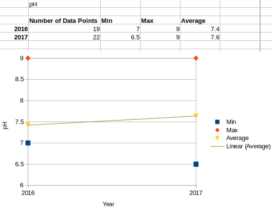
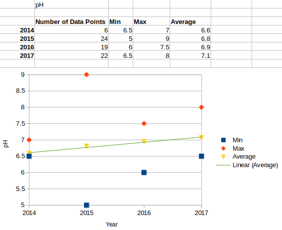
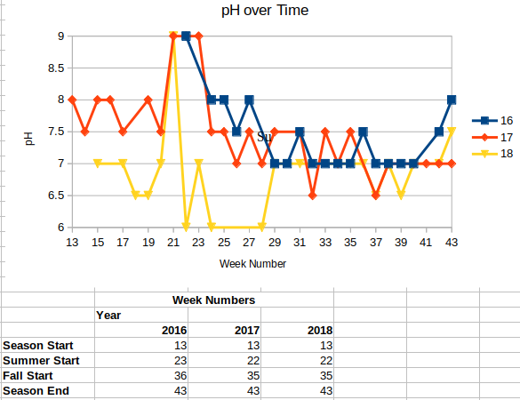
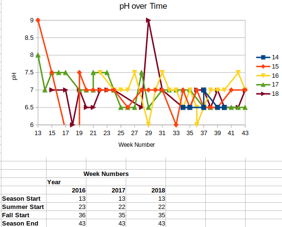

Write Ups
To not repeat myself in the write-ups, please refer to the info page of the project for the introduction, methods, and materials.
2016 Write-Up
Analysis
Analysis will start from June of 2016, as I did not collect data and notes.
Big Pond
In the beginning of my data collection, I noted that Ammonia was at 0.25 parts per million (ppm) seven (7) weeks with two weeks of 0.5 ppm in between the weeks of the 0.25 ppm levels. The pH levels stayed around 7 with two (2) weeks of 7.5 and a week of 8. Luckily the Nitrite and Phosphate levels stayed at zero (0) ppm.
Small Pond
In the beginning of my data collection, I noted that Ammonia was at 0.25 ppm in the small pond for eight (8) weeks. Near the end of the season, the Phosphate levels peaked at two (2) ppm but within two weeks, it went back down to zero (0). The pH levels ranged from 6 to 7.5, mostly the 7 to 7.5 range with a week of 6 and two (2) with 6.5. Luckly the Nitrite levels stayed at zero (0) ppm.
Conclusions
Big Pond
The reason why the Ammonia stayed at 0.25 ppm then dropped is because (as noted in the timelinethe cattle nearby the pond were moved further away from it.
Small Pond
I have no explaination to the Ammonia levels in the small pond in the summer months of June and July and the first week of Auguest. But for the rest of the data collection, there might be a correlation with weather because it rained those days where there were spikes. Same for the Phoshate levels for those two weeks. As for the pH levels, the plants that were put in could of made a difference but that is only a guess.
Other Notes
I found out that LirbeOffice handles .csv files better than Microsoft Office. I also did not think on how to format when I started to data collect the .csv file in terms of formating the date as a three colum seprated entry instead of a simple mm-dd-yy format. If I did the date in the correct format, I would of had charts to show, either from LibreOffice or from R. Because of this, there are no charts for this write-up. Plus, most of the deviations from 7 pH and zero (0) ppm respectfully of the values measured will show correlation with weather, mostly when it rains, and other factors, like the cattle being moved away from the big pond.
Due to me getting a new job just as the data collection season ended and then a bad case of winter blues, I did not get to do that much research on solutions. Because of this, I think I will collect data for the first half of the season and work on figuring out what plants could be placed in the small pond (the big one will be untouched).
2017 Write-Up
Analysis
Big Pond
So far this year, the pH started at 8 with a few times going down to 7.5 but in most of May and the first week of June. After that first week of June, the pH stayed stable with some fluctuations between 6 and 7.5.

I decided to focus on analyzing pH out of all the elements because it's the one that changes the most. The average pH over the years rose while the min went down and the max stayed the same.
There was only two ammonia level spikes but they didn't raise above 0.25.
Like last year, the nitrite and phosphate levels stayed down at 0 ppm.
Small Pond
So far for this year, the pH has mostly stayed between 6.5 and 7.5, only one time reaching to 8; that was when the data collection season started.

I decided to focus on analyzing pH out of all the elements because it's the one that changes the most. The average pH over the years rose while the min and max changed through the years.
The ammonia levels were high in the start of the data collection season going from 0.25 ppm to 1 ppm then going down to 0, then again from 0.5 to 0. Until August, the levels stayed at 0, and at two moments rose to 0.25.
Only once, in June, the nitrite levels rose to 0.25 ppm but they quickly came down.
Like last year, the phosphate levels stayed down at 0 ppm.
Conclusions
Both Ponds
While I'm aware that the number of sample per year don't match, I still think the pH is slowly raising but not to a dangous level as this grahpic shows:

Once again, I think there might be a correlation with weather because it rained those days/weeks (before or that week) where there were spikes.
Big Pond
Nothing can be said about the big pond, I think it's stable even though there is duckweed in the pond.
Small Pond
Like the small pond, I think it's stable even though there is duckweed in the pond.
Other Notes
USA Government Services
-
There is National Wetlands Inventory (NWI) which keeps a inventory of the wetlands in the USA and classifies them.
-
USDA Natural Resources Consevrvation Service has a National Wetland Plant List (NWPL)
Grailville
- Based on the NWI both ponds are classified as a PUBgh (1) and is a freshwater pond but the little is 1.33 arces and the big is 1.53 arces. There is also a freshwater emegrent wetland that is a PEM1Ch (2), 0.90 arce wetland.
Both wetlands are natural wetlands, not constructed, and therefore, the first question of my research is removed from the list. I don't see it being a useful point to research or talk about.
Footnotes
1,2- Ref Page
1
P System PALUSTRINE: The Palustrine System includes all nontidal wetlands dominated by trees, shrubs, persistent emergents, emergent mosses or lichens, and all such wetlands that occur in tidal areas where salinity due to ocean-derived salts is below 0.5 ppt. It also includes wetlands lacking such vegetation, but with all of the following four characteristics: (1) area less than 8 ha (20 acres); (2) active wave-formed or bedrock shoreline features lacking; (3) water depth in the deepest part of basin less than 2.5 m (8.2 ft) at low water; and (4) salinity due to ocean-derived salts less than 0.5 ppt.
UB Class UNCONSOLIDATED BOTTOM: Includes all wetlands and deepwater habitats with at least 25% cover of particles smaller than stones (less than 6-7 cm), and a vegetative cover less than 30%.
G Water Regime Intermittently Exposed: Water covers the substrate throughout the year except in years of extreme drought.
Other Modifier(s):
h SPECIAL MODIFIER Diked/Impounded: These wetlands have been created or modified by a man-made barrier or dam that obstructs the inflow or outflow of water.
2
See code for P above.
EM Class EMERGENT: Characterized by erect, rooted, herbaceous hydrophytes, excluding mosses and lichens. This vegetation is present for most of the growing season in most years. These wetlands are usually dominated by perennial plants.
1 Subclass Persistent: Dominated by species that normally remain standing at least until the beginning of the next growing season. This subclass is found only in the Estuarine and Palustrine systems.
Other Modifier(s):
C WATER REGIME Seasonally Flooded: Surface water is present for extended periods especially early in the growing season, but is absent by the end of the growing season in most years. The water table after flooding ceases is variable, extending from saturated to the surface to a water table well below the ground surface.
2018 Write-Up
Analysis
Big Pond

Small Pond

Conclusions
The pH levels are stable in both ponds but it's hard to say if the levels are stable since these are once a week data point, at almost the same time, collections not 24/7 sensor collection.
Other Notes
I realized my mistake on how I formatted the date data and fixed into week number, yy instead of mm,dd,yy. I used LibreOffice Calc to convert the date into week number based on the year and concatenating the year to 20yy, as I only had it in the two digit format. Function used: =WEEKNUM(DATE(CONCATENATE(20,D2),A2,B2))